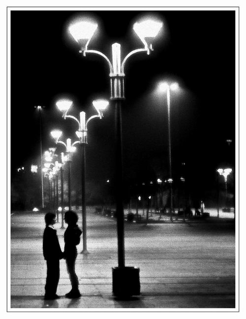

<strong>reticence</strong> @ Dec 06, 2005

忽然觉得头发是暧昧的，当你用手指轻柔地拨弄它。
寒冷的季节头发被理发师自信的剪去了很多，头发呈层次状，随意的如刚起床的摸样。当我的身体全神贯注为迎接下一次周期做准备时，理发师的自信将我变成另一个人，这样不仅要接受折磨还要适应新我。此时，头发开始柔软如丝，干燥发梢和染发沉默而麻木地消退，麻木压倒一切沉默。加缪的提醒：真正的无言不是沉默而是说话。
大量灰色人群如默声电影在汽车前挡玻璃上不断流动，车载CD里的背景音乐，简洁低沉的作品。城市里的人群，展示涨潮与落潮，存在着一种叫作命运的东西，那些错过的或特定的相遇，等待人流经过和穿越，永恒的只是时间！
越来越喜欢驾车穿梭在暖色的高架上，承载一切的愿望，沉静的蕴涵着内在节奏，既是夜的参与者又是旁观者，近懂得远，彼岸遥在远方，心灵随着高架提升或沉沦。
17 Responses to “<strong>reticence</strong>”
2005-12-06
别哭，头发是身外之物,但也可以哭,身外之物也是物!分裂的东西呀!
2005-12-06
Keep yourself is the best way for personal feeling but is not easy for you in the socity. We always struggle between the reality and ideality.
2005-12-06
发一张照片，让人们也能见识一下，温柔爱昧的模样。
2005-12-07
下次做头发前先花点时间与理发师沟通一下，估计就可以让少点头发倒在他自信的刀下。
改变未必是坏事。
2005-12-09
I am Nanjing Blog,
wellcome to my blog
http://blog.sina.com.cn/u/1409867382
2005-12-11
Hey! I found this place is a lousy one. Shittie articles...Shittie administrator...
2005-12-12
TO:Shitti
在我心情不错的时候回复您几句：您不再在这里出现，对我们大家都是幸事。:)
2005-12-12
我想说，照片配合着音乐，读你的文字感觉很好！不过写BLOG不够勤快，呵呵
2005-12-12
喜欢你这个笑容，很象我曾经的女友．
这个笑容，又让我想起了数年前的她．
在２００５的一个寒冬夜晚，一缕茶香，一阵温馨溢于心头．
无它，仅借贵ＢＬＯＧ祝现在的她一切安好．
也顺祝版主开心笑容每一天！
2005-12-12
我觉得挺好.
2005-12-12
不错，很年轻。
2005-12-13
其实现场版效果不错。照片拍得更是惊艳。
2005-12-13
Hi,我是一过客，喜欢你家的妞妞，能传上玉照吗？我家有一个不学无术的班尼，想Ｅ-mail给你，谢了！
2005-12-14
还是原来的你最美！！！
2005-12-14
觉得你的美就像龙井茶!!!
2005-12-17
哈，造型暧昧，留言的人语气也暧昧。。
2005-12-17
Sherry的皮肤看上去也暧昧呢，嘿嘿~~
Leave A Reply
存档只读，评论已关闭。